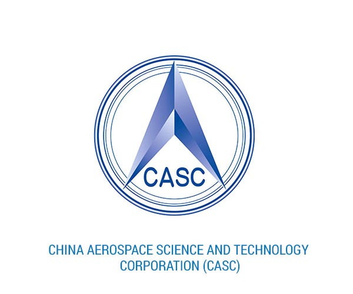

China Aerospace Science and Technology Corporation (CASC)
The China Aerospace Science and Technology Corporation (CASC) is a major Chinese state-owned aerospace and defense enterprise headquartered in Beijing. It is the principal contractor for China's space program and plays a central role in satellite development, launch services, and space exploration.
Overview
CASC is responsible for the development and operation of the Long March (Chang Zheng) launch vehicle family. The corporation supports human spaceflight, satellite launches, lunar and planetary exploration, and strategic national missions. CASC is known for its high launch cadence and long-term reliability.
Launch Vehicles
- Long March 2: Medium-lift launch vehicle used for crewed missions and satellite deployment
- Long March 3: Launch system optimized for geostationary transfer orbit missions
- Long March 5: Heavy-lift rocket supporting large payloads, space station modules, and deep-space missions
Mission Portfolio
CASC conducts a wide range of missions, including the launch of navigation, communication, and Earth observation satellites. The corporation is also responsible for China's crewed Shenzhou missions, the Tiangong space station, and lunar exploration programs such as Chang'e.
Future Direction
CASC is focused on advancing next-generation launch vehicles, reusable rocket technologies, and expanded deep-space exploration. Future plans include crewed lunar missions, enhanced space station operations, and increased commercial launch services.